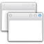
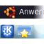

Desktop
"Desktop" ist ein recht schwammiger Begriff. Im Minimalfall bezeichnet er das, was man sieht, wenn keine Fenster geöffnet sind: Ein Hintergrundbild und gegebenenfalls Verknüpfungen zu Programmen oder Dateien (Icons). In Begriffen wie "Desktopsuchmaschine" oder "3D-Desktop" wird der Begriff weiter gefasst: Hier ist im einen Fall der lokale Computer (im Gegensatz zu "Internetsuchmaschine") und im anderen die Benutzerschnittstelle als ganzes gemeint.
Eine "Desktopumgebung" wiederum ist eine Art Rundum-Sorglos-Paket, das neben Konfigurationswerkzeugen zumindest Fenster-, Datei- und Displaymanager, Panel und eine Möglichkeit, einen Desktophintergrund einzurichten, mitbringt. Große Desktopumgebungen wie GNOME oder KDE SC beschränken sich nicht darauf und liefern alles mit, was man für den normalen Computeralltag braucht.
| Desktopumgebungen | |||||
| Unity Standard bis Ubuntu 17.04 | GNOME Shell Standard ab Ubuntu 17.10, davor Ubuntu GNOME | KDE Plasma Standard unter Kubuntu | |||
| Xfce Standard unter Xubuntu |  | LXDE Standard unter Lubuntu | Mate Standard unter Ubuntu Mate | ||
| Budgie Standard unter Ubuntu Budgie | |||||
Außerdem kann man sich auch eine Eigene Desktopumgebung zusammenstellen
Weitere:
Cinnamon - GNOME 3 mit der Optik von GNOME 2
Enlightenment - eine Desktopumgebung mit langer Tradition
Gnome Flashback - GNOME-3-Desktop wie bei GNOME 2
3D-Desktop
 Übersicht zu den 3D-Effekten von Desktop-Ungebungen
Übersicht zu den 3D-Effekten von Desktop-UngebungenStandardanwendungen - die vorinstallierten Programme der offiziellen Ubuntu-Derivate
Desktopumgebung deinstallieren - erklärt das (fast) restlose Entfernen einer Desktop-Umgebung
| Desktopkomponenten | |||||
|  | Fenstermanager Verwalten der Fenster auf dem Desktop | Dateimanager Dateien und Ordner durchsuchen und verwalten |  | Displaymanager zuständig für die grafische Anmeldung | |
 | Desktophintergrund Hintergründe anzeigen, wechseln, etc. | Desktopsuchmaschinen Dateien auf dem Computer finden | Barrierefreiheit behindertengerechte Zugänge ermöglichen | ||
|  | Panels die kleinen Kommandozentralen für den Bildschirmrand | Docks und andere Anwendungsstarter | Desklets Miniprogramme | ||
| Informationen auf dem Desktop |  | Terminals transparent oder immer präsent machen | XServer Allgemeines zum X Window System | ||
Panels¶
in Desktop-Umgebungen integriert:
GNOME - behandelt GNOME 2 und 3
Kontrollleiste - KDE-Panel
fbpanel - ein sehr flexibel konfigurierbares Panel
tint2 - ein Panel für alleinstehende Fenstermanager
AllTray - Anwendungen in das Benachrichtigungsfeld oder die Traybar minimieren
Docks und andere Anwendungsstarter¶
Apwal - drapiert die Starter rund um den Mauszeiger
Avant Window Navigator (AWN) - animierte Leiste am unteren Bildschirmrand
DockbarX - alleinstehendes Dock, auch als Xfce-Panelplugin oder als Zusatz für AWN verfügbar
Docky - animiertes Dock mit Plugins
Easystroke - Programme durch Mausgesten auf dem GNOME 2-Desktop starten
Glx-Dock - (früher Cairo-Dock) animierte Leiste(n) und Applets für den Desktop
GNOME Do - vielseitiger und flexibler Anwendungsstarter für den GNOME-2-Desktop
GNOME-Pie - originelles, da rundes Dock
KRunner - Standardstarter für KDE Plasma
Lancelot - Programmstarter für KDE Plasma
Kupfer - sehr umfangreicher Anwendungsstarter
Launchy - ein Anwendungsstarter mit integrierter Web-Suche
Synapse - Anwendungsstarter ähnlich GNOME Do
Launchbar - von Unity
wbar - ressourcensparendes Dock
Informationen auf dem Desktop¶
Desklets
ProgrammübersichtBenachrichtigungsdienst - Pop-Up-Nachrichten
Conky und Conky Manager - Systemmonitor
Covergloobus - Cover-Anzeige und Steuerung des Audio-Players
GKrellM - Systemmonitor
myDesktopCalendar - Desktopkalender
Notizen
Klebezettel, Outliner, AufgabenplanerRainlendar - Desktopkalender
TICKR - aktuelle Nachrichten als Laufzeile auf dem Desktop
Wetteranzeige
diverse Möglichkeiten, das Wetter anzuzeigenXOSD - On-Screen-Display
Terminals¶
Transparente und immer präsente Terminals kann man auf verschiedene Art erreichen:
Transparentes Terminal - ein transparentes Terminal auf dem Desktop anzeigen
Tilda - ein Terminal per Tastendruck (wie bei vielen Spielen) für den GNOME-2-Desktop
Guake - eine Alternative zu Tilda
YaKuake - das KDE-Gegenstück zu Tilda
Allgemeines zum X Window System¶
XServer
WissensartikelMultiseat - Einrichtung eines Mehrplatzcomputers
Ressourcen - Standardeinstellungen für X-Programme
GTK+/Design wechseln - das Design von GTK+-Anwendungen ändern
Mauszeiger - Mauszeiger- bzw. Cursordesign wechseln
Multipointer - Ansteuerung der Maus mit mehr als einem Zeiger
unclutter - lässt Mauszeiger bei Inaktivität verschwinden
xcursorgen - eigene Mauszeiger erstellen
xkill - Fenster der grafischen Oberfläche via Mausklick beenden
Sonstige Programme¶
Redshift - tageszeitbedingt die Farbtemperatur des Monitors automatisch anpassen
Zwischenablage - Speicherbereich zum Austausch von Informationen zwischen Programmen
f.lux Monitor dimmen - Programm zu Anpassen der Farbe des Monitors
- Erstellt mit Inyoka
-
 2004 – 2017 ubuntuusers.de • Einige Rechte vorbehalten
2004 – 2017 ubuntuusers.de • Einige Rechte vorbehalten
Lizenz • Kontakt • Datenschutz • Impressum • Serverstatus -
Serverhousing gespendet von